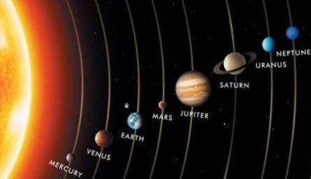

Общая информация

Солнечная система — планетная система, включающая в себя центральную звезду — Солнце — и все естественные космические объекты, обращающиеся вокруг Солнца.
Она сформировалась путём гравитационного сжатия газопылевого облака примерно 4,57 млрд лет назад.
Четыре ближайшие к Солнцу планеты, называемые планетами земной группы, — Меркурий, Венера, Земля и Марс — состоят в основном из силикатов и металлов.
Четыре более удалённые от Солнца планеты — Юпитер, Сатурн, Уран и Нептун — намного более массивны, чем планеты земной группы.
Крупнейшие планеты Солнечной системы, Юпитер и Сатурн, состоят главным образом из водорода и гелия; меньшие газовые гиганты, Уран и Нептун, помимо водорода и гелия, содержат в составе своих атмосфер метан и угарный газ.
Такие планеты выделяются в отдельный класс «ледяных гигантов».
Шесть планет из восьми и четыре карликовые планеты имеют естественные спутники. Юпитер, Сатурн, Уран и Нептун окружены кольцами пыли и других частиц.
Пояс астероидов, находящийся между Марсом и Юпитером, схож по составу с планетами земной группы, поскольку состоит из силикатов и металлов.
Крупнейшими объектами пояса астероидов являются карликовая планета Церера и астероиды Паллада, Веста и Гигея.
За орбитой Нептуна располагаются транснептуновые объекты, состоящие из замёрзшей воды, аммиака и метана, крупнейшими из которых являются Плутон, Седна, Хаумеа, Макемаке, Квавар, Орк и Эрида.
В Солнечной системе существуют и другие популяции малых тел, такие как планетные квазиспутники и троянцы, околоземные астероиды, кентавры, дамоклоиды, а также перемещающиеся по системе кометы, метеороиды и космическая пыль.
Солнечный ветер создаёт пузырь в межзвёздной среде, называемый гелиосферой, который простирается до края рассеянного диска.
Гипотетическое облако Оорта, служащее источником долгопериодических комет, может простираться на расстояние примерно в тысячу раз дальше гелиосферы.
Солнечная система входит в состав галактики Млечный Путь.